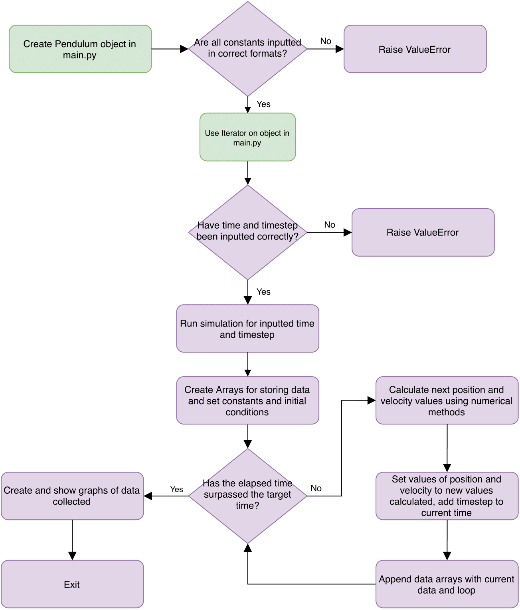

This project was completed in February-April 2020. I was tasked with creating a simulation of a more complex physical system than the one in the Solar System project. I chose to simulate a forced damped non-linear pendulum and analysed the results as to the accuracy of the simulation.
I produced a 20-page report on my findings on the accuracy of my simulation.
If you would like to look at the source code please follow this github link or click the image above.